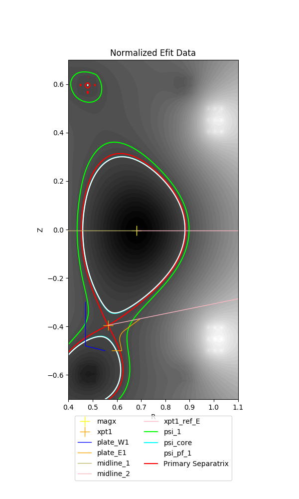
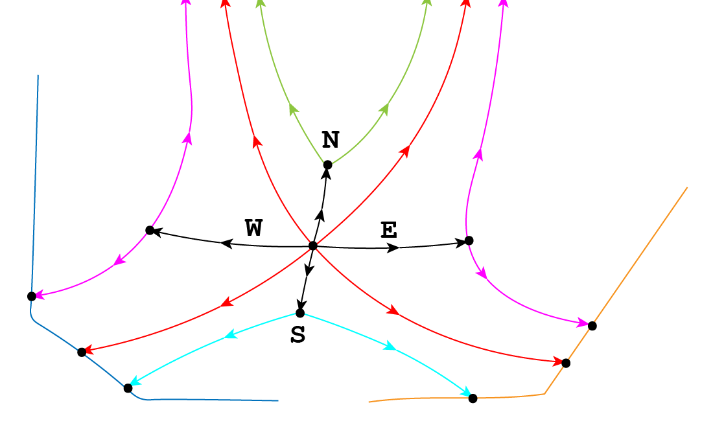
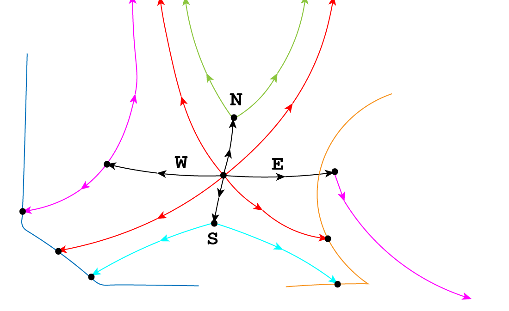
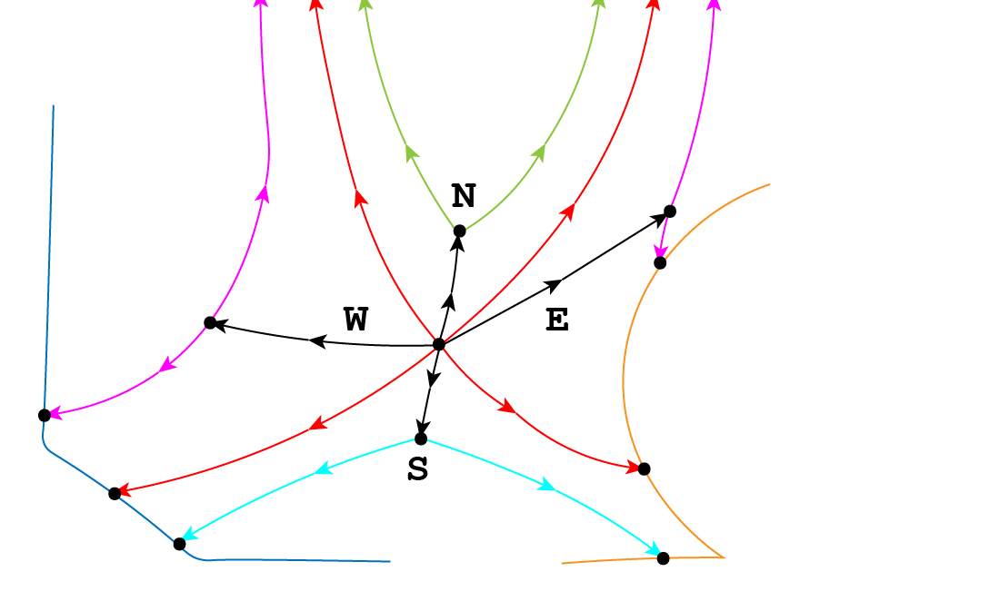
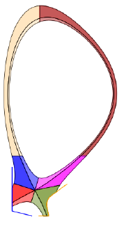
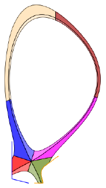
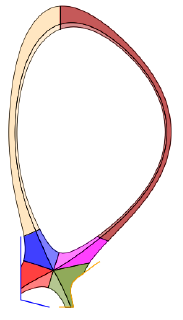
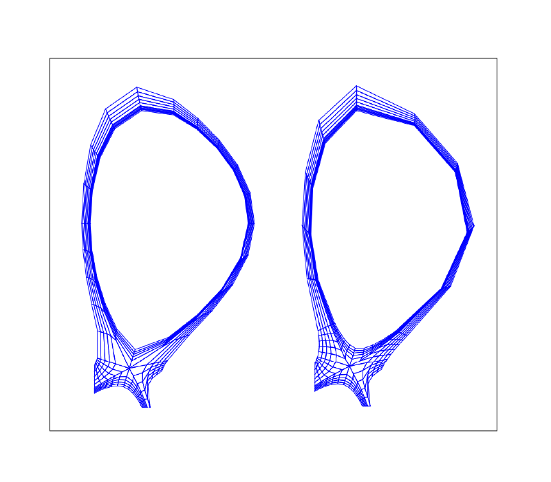
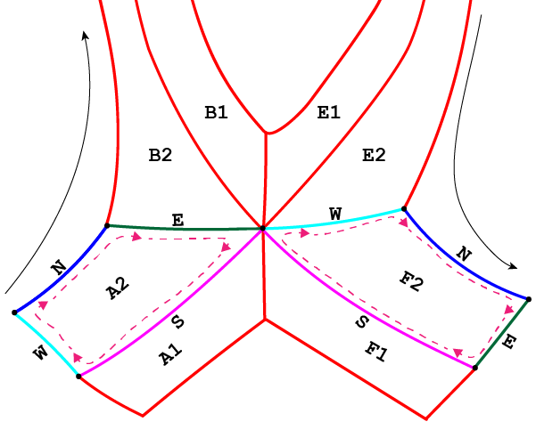
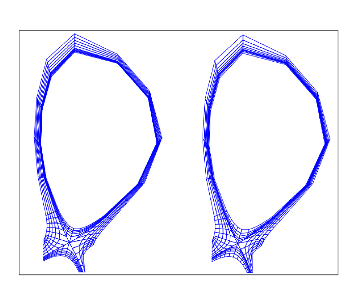

Example: single-null configuration (further exploration)¶
Note
This tutorial assumes the reader has already explored the introductory SNL tutorial.
Some cases require enabling of certain attributes in the parameter file in order to successfully produce a grid.
Here we will detail said cases, and also dig deeper into INGRID’s capabilities for generating a grid. This tutorial will:
Detail when adjustment to line-tracing algorithm is required by user
Illustrate how to make adjustments to a generated
PatchmapIllustrate how to apply poloidal/radial transformations for non-uniform grid spacing
Demonstrate how to reduce cell-shearing (increase orthoganality) of a grid via
distortion_correction
Loading our example¶
The parameter file cmod_param.yml we will use in this tutorial is located in example_files/SNL.
Loading the parameter file in the GUI and viewing the data should show the following.
Immediately we see that there is a line segment originating from the primary x-point and extending to the EFIT domain boundary.
This is an indicator that INGRID will be overriding the default line tracing behavior from the primary x-point. As for why and how we activate this capability will be detailed in the next section.
Standard SNL primary x-point line tracing pattern¶
INGRID utilizes specific line tracing procedures for each supported topology. Below is a cartoon of line tracing directions from the primary x-point.
Tracing in direction N, S, E, W are orthogonal to flux surfaces.
Note that line tracing from the W and E directions terminate upon intersection with the psi-max surface. Upon intersection with the psi-max surface, line tracing continues along the poloidal line and searches for intersection with a target plate.
In this particular example case we are exploring, intersection with the psi-max surface occurs past the target plate, thus causing line tracing to fail.
We see this in the cartoon below when modifying the target plate geometry.
Although this can indeed be remedied by modifying the target plate geometry or adjusting psi-max surfaces, INGRID allows the user to override the default orthogonal line tracing so that line tracing can continue without error. This remedy is illustrated below.
Overriding SNL primary x-point line tracing pattern¶
We can override the default orthogonal line tracing for both E and W directions with the entries use_xpt1_E and use_xpt1_W that reside within patch_generation.
This can be seen below.
grid_settings:
#...
# other settings
#...
patch_generation:
use_xpt1_E: true
use_xpt1_W: false
Upon activating either entry and reloading the view into the parameter file, we will see line segment that extends from the primary x-point. This segment is a marker indicating the new line tracing direction.
By default, no rotation is applied to the line tracing direction. We can adjust the direction with the entries xpt1_E_tilt and xpt1_W_tilt. We see this below.
grid_settings:
#...
# other settings
#...
patch_generation:
use_xpt1_E: true
use_xpt1_W: false
xpt1_E_tilt: 0.2 # radian value for rotation
xpt1_W_tilt: -0.8 # radian value for rotation
The user now has the tools to remedy the above situation. We can see in this case that xpt1_E_tilt: 0.2 provides enough clearance such that intersection with the target plate will occur.
Tip
When it is not immediately obvious from the loaded EFIT data that orthogonal line tracing will intersect psi-max past the target plate, the user can change the visualization of the INGRID data from
filled contours to unfilled. We do this by changing view_mode: filled to view_mode: lines. We can control the number of contour lines plotted by modifying the nlevs entry as well. This can help
with visually imagining where orthogonal line tracing will terminate.
Other settings for Patch map modification¶
Overriding orthogonal line tracing from the primary x-point is just one modification that can be made to influence a final Patch map.
SNL line tracing for certain patches in the core will define boundaries based off intersection with the horizontal and vertical lines that intersect the magnetic axis (midplane).
One such modification is applying an RZ translation to the magnetic-axis coordinate used to generate said Patch boundaries.
This can be controlled in the parameter file by editing entries rmagx_shift and zmagx_shift under patch_generation in grid_settings.
grid_settings:
patch_generation:
rmagx_shift: 0.0 # Translate R coordinate
zmagx_shift: 0.0 # Translate Z coordinate
Saving the parameter file and reloading the view into the data will reflect the changes. The Patch map generated with the translations above can be seen below.
In a similar manner to adjusting the angle of line tracing in the E and W directions from the primary x-point, we can adjust the line
segments extending from the magnetic-axis. These line segments define the east faces of patches B1 and B2,
as well as the west faces of patches E1 and E2.
The tilt of the inner-midplane and outer-midplane can be controlled with entries magx_tilt_1 and magx_tilt_2 respectively. These entries are contained within patch_generation in grid_settings.
grid_settings:
patch_generation:
magx_tilt_1: 0.0 # inner-midplane rotation (in radians)
magx_tilt_2: 0.0 # outer-midplane rotation (in radians)
Saving the parameter file and reloading the view into the data will reflect the changes. The Patch map generated with the only the tilt values entered above can be seen below.
Note
Midplane tilt entries are in radians and follow the standard counter-clockwise rotation direction.
Combining both together yields the following Patch map.
Tip
Applying these Patch modifications appropriately can allow one to increase cell density near primary x-point without modifying np/nr values
On the left is the grid with no Patch map modifications for reference.
Background knowledge for poloidal and radial grid transformations¶
INGRID allows the user to provided poloidal and radial grid distribution functions for generating non-uniform grids.
Before detailing how to invoke these features, some background on the Patch object itself.
Each Patch boundary is defined by 4 lines that we refer to as N, E, S, W. This allows for us to maintain a clockwise orientation on the boundary of a Patch. Below is a cartoon illustrating the idea.
The N boundary (seen in dark blue) for Patch A2 begins at the max-psi strike-point on the target plate west of the primary x-point (inner target plate for SNL case), and terminates at the B2 interface. The S boundary (seen in magenta) for Patch A2 is oriented in the opposite direction and terminates upon intersection with the target plate.
The E and W boundaries (seen in dark green and cyan, respectively) are defined in the radial direction relative to the N and S boundaries.
Note that this convention holds throughout the entire Patch map. We can see this by noticing that upon reaching Patch F2, the E boundary is now defined by a portion of the (LSN outer) target plate.
Note
INGRID chooses to parameterize the **N face in length with parameter \(s \in [0, 1]\) for poloidal distribution functions. Similarly, INGRID chooses to parameterize the W face in increasing psi with parameter \(s \in [0, 1]\) for radial distribution functions. **
Now we discuss how the user specifies poloidal and radial grid transformations within the parameter file.
INGRID parses a string from the user in the form ``x, f(x)`` where :math:`x` indicates the dependent variable and :math:`f(x)` is mathematical expression representing the distribution.
Within the parameter file, we have seen the string x, x utilized for entries radial_f_default and poloidal_f_default. INGRID interprets this as applying a uniform distribution of
vertices for defining the grid (consistent with what we have seen).
Warning
Due to the parameterization \(s \in [0,1]\), defining \(f(x)\) such that \(f: [0, 1] \to [0, 1]\) is important. Apply appropriate normalization operations when utilizing non-trivial functions (see example below).
INGRID utilizes SymPy for generating a function from the user provided string. Standard Python arithmetic operations are supported (+, -, *, /, **, …), as well as common
mathematical functions such as exp and log.
Applying poloidal and radial grid transformations¶
In general, we adopt a notation similar to specifying np/nr cells. Below is a snippet of a YAML file with default poloidal and radial transformation values.
grid_settings:
grid_generation:
# ...
# Other grid_generation settings
# ...
poloidal_f_default: x, x # Global uniform poloidal
radial_f_default: x, x # Global uniform radial
Much like np_default and nr_default, entries poloidal_f_default and radial_f_default apply to poloidal “columns” and radial “rows” in index space, respectively.
The default appended to poloidal_f_ and radial_f_ tells INGRID to apply the corresponding transformation globally.
Poloidal transformations can be specified with the same convention as specifying poloidal cells (poloidal_f_A, poloidal_f_B, …, poloidal_f_F).
Radial transformations follow the same convention (radial_f_1, radial_f_2), but also have an additional radial_f_3 specifically for the inner-core region.
The following applies an exponential-like distribution (between 0 and 1) for the SOL, PF, and CORE. These transformations will generate grid cells that hug the primary separatrix slightly more than usual.
grid_settings:
grid_generation:
# ...
# Other grid_generation settings
# ...
poloidal_f_default: x, x # Global uniform poloidal
radial_f_default: x, x # Global uniform radial
radial_f_1: x, 1-(1-exp(-(1-x)/0.4))/(1-exp(-1/0.4))
radial_f_2: x, (1-exp(-(x)/0.8))/(1-exp(-1/0.8))
radial_f_2: x, (1-exp(-(x)/0.8))/(1-exp(-1/0.8))
The resulting grid with transformations can be seen on the left, and the original grid with no transformations can be seen on the right.
Reducing cell shearing via distortion_correction¶
INGRID does not enforce an orthogonality condition when generating a grid. INGRID allows the user to impose angle constraints on cells within a generated grid
in order to increase orthogonality. We do this via the distortion_correction feature.
Below is an example of cell shearing and the motivation for INGRID’s distortion_correction.
This distortion_correction tool allows the user to specify angle constraints theta_min and theta_max in order to mitigate cell shearing.
INGRID will shift the cell vertex by increments of 1 / resolution until the resultant angle is within the user constraints.
If the constraint cannot be satisfied (vertex leaves the Patch), INGRID will backtrack until the vertex is within the Patch bounds.
Below is a snippet of the parameter file format showing distortion_correction applied globally.
grid_settings:
grid_generation:
distortion_correction:
# Global settings
all:
active: True # toggle distortion_correction
resolution: 1000 # 1 / resolution step-size for shifting vertex
theta_max: 120.0 # angle constraint
theta_min: 80.0 # angle constraint
# Patch specific settings can be provided in addition to global settings
# (similar to how we specify np/nr for Patches on top of default np/nr)
# Example: Specify distortion_correction for Patch A1
# A1: # <-- (Patch name here can be changed)
# active: false # toggle distortion_correction
# resolution: 1000 # 1 / resolution step-size for shifting vertex
# theta_max: 120.0 # angle constraint
# theta_min: 80.0 # angle constraint
np_default: 5
nr_default: 5
poloidal_f_default: x, x
radial_f_default: x, x
Below is a side-by-side comparison of distortion_correction toggled on and off respectively.
We can see that the radial lines are indeed more orthogonal to the poloidal contours. Although only a mild effect in this case, we
have seen that distortion_correction can significantly reduce shearing and generate tidier grids in others (example SF cases seen below).
This feature (in addition to those detailed above) is just another tool at a user’s disposal that need not be utilized in every case.
Adjusting guard cell size¶
Guard cell size for a generated grid can be specified within the parameter file by editing entry guard_cell_eps within grid_settings. That is:
# ---------------------------------------------------
# General grid settings
# ---------------------------------------------------
grid_settings:
# ...
# ... Other grid_settings entries
# ...
guard_cell_eps: 0.00001 # Size of guard cells.
Note
Specification of guard cell size must be done prior to initiating grid generation (clicking Create Grid).
Summary¶
In this tutorial, we encountered a situation where parameter file modification is required for INGRID to successfully generate a Patch map. This was resolved by modifying the line tracing procedure in order to accomodate the provided geometry.
We also saw how the modification of the line tracing procedure falls into the over-arching category of INGRID tools that allow the user to customize a Patch map.
Finally, we dove deeper into grid customization capabilities such as applying distortion_correction, poloidal and radial transformations,
and specifying guard cell size.